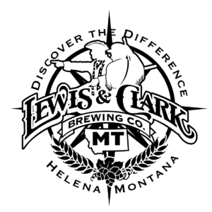

Visit Lewis and Clark Brewing Co.'s Website
Lewis & Clark Brewing Co. is a family-owned Montana craft brewery that has been producing award-winning beers for over 17 years. Named after the admirable leaders of the expedition that explored the West, we are proud to continue the legacy of Lewis & Clark and their driven spirits
Our team of brewers takes pride in the craftsmanship that goes into all our beers. From the crowd favorites of Prickly Pear Pale Ale and Miner's Gold Hefeweizen to our new Juicy ObSession and Craft Hard Seltzers, Lewis & Clark Brewing Co. beers are all created with one goal: to produce the finest ales and lagers possible and to serve them at their peak of freshness.
Buy A Physical MT Brewery Passport Today!
Tap the Map to Go Back